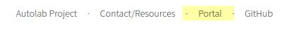
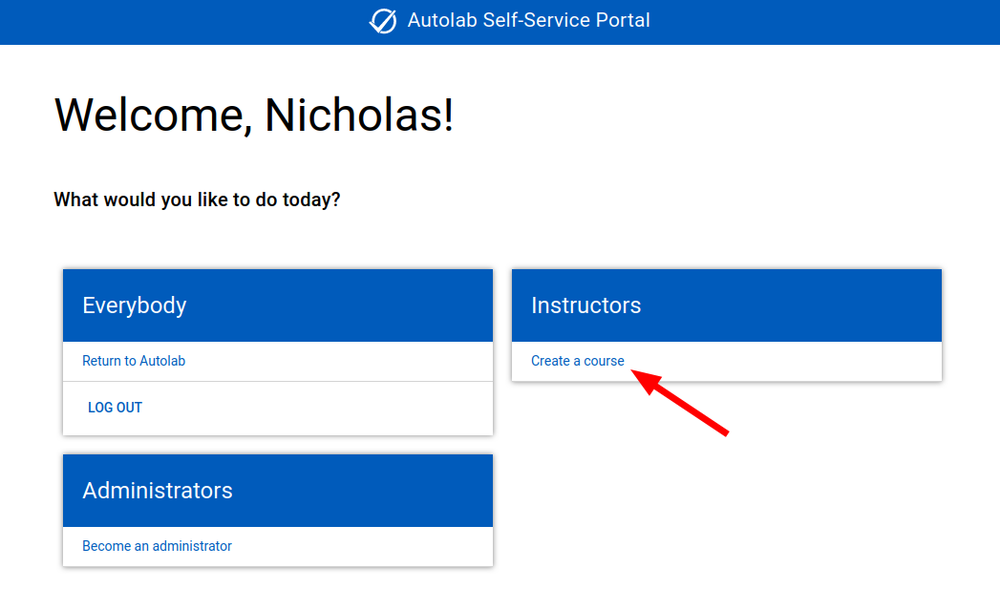
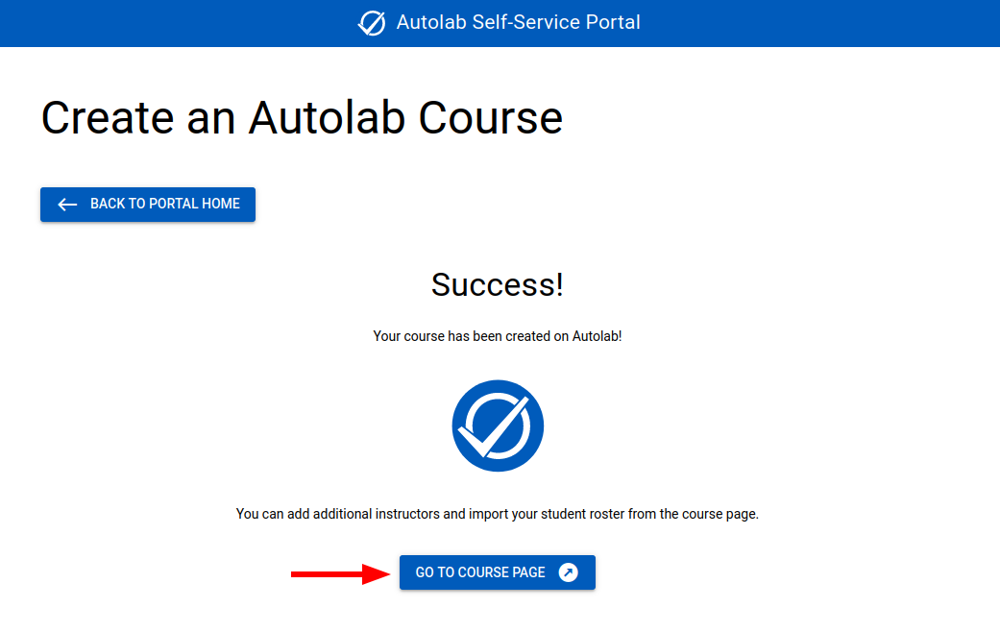

Getting Started
Your First Login
The first time you visit Autolab at https://autolab.cse.buffalo.edu, you'll be asked to sign in.
Students and faculty should choose Sign in with Shibboleth. You'll be redirected to the UB Single Sign On page
(shibboleth.buffalo.edu), where you can enter your standard UBIT credentials and perform a 2FA verification.
After signing in, you'll be redirected to Autolab. Since you're a new user, you probably won't be enrolled in any courses. (Instructors can enroll students in courses before they've logged into Autolab for the first time, so you may see some courses even if this is your first time logging in.)
If you're an instructor, you can Create a Course to get started. If you're a student, you'll need to wait for your instructor to create a course and enroll you in it.
Create a Course
This feature is only available to instructors who have current and/or future lectures or seminars officially scheduled by UB. If you need an Autolab course for a different purpose, please contact CSE IT.
Visit the portal
The footer of every page contains a link to our custom Autolab Portal.

Visit the portal, and click Sign in with Shibboleth. It will probably be automatic if you've recently signed into
Autolab.

Portal home
After signing in, you'll see a list of actions you can perform. Select Create a course.

Step 1
You'll see a list of current and upcoming courses you're scheduled to teach. Find the course you want to create, and
click Create this Course at the bottom of the card.

About Course URLs
For consistency, the course URL is predefined based on the course name and semester. It's not customizable by the instructor. If a course is cross-listed, the lowest level course is used. The course URL is used for unique identification in different ways on the backend, so we try to refrain from deviating from this standard scheme.
Step 2
You'll be able to customize the course name. We've chosen a good default, but you can change it if you want. We have
some guidelines and examples at the top of the page. Click Continue when it looks good.

Step 3
Finally, you'll be able to confirm the course creation. If everything looks good, click Confirm at the bottom of the
card. Most other options can be changed later if necessary.
Success
If everything went well, you'll see a success message. You can click Go to Course Page to continue in Autolab. You can
continue configuring your course with info in the Course Management guide.

If there's an error
If something went wrong, you'll see an error message. If the message doesn't help you resolve it, please contact CSE IT for assistance.
Here's an example of an error message you might see if you try to create a course that already exists. In this case, it's likely that another instructor already created the course but hasn't added you to it yet. If you and another instructor would like separate Autolab courses for the same course in the same semester, please contact CSE IT. We've found that most instructors prefer to share a single course.

Custom course URL conventions
The URL conventions for automatically generated courses are described above. When courses are created manually, by contacting CSE IT, we still follow certain conventions for consistency.
Multiple Autolab courses for a single UB course
- Faculty may request additional Autolab courses for different sections of a UB course.
- The first course should be created with the Self-service Portal like normal.
- E.g.,
cse442-f23
- E.g.,
- Subsequent courses can be created by contacting CSE IT.
- The first 10 characters of the course URL are the same as the first course. This is parsed by automated tools, such as the "magic importer" in the course sections tool.
- Reasonable suffixes are appended to the end of the standard course URL, such as section letters.
- E.g.,
cse442-f23b - E.g.,
cse442-f23c
- E.g.,
Individual test courses
- CSE faculty and staff may request an Autolab course for testing purposes by contacting CSE IT.
- The course URL will be your username prefixed with
individual-.- E.g.,
individual-username
- E.g.,
- Only one Autolab course will be created per person.
Club courses
- Faculty advisors of an officially recognized UB CSE/SEAS club may request an Autolab course for the club by contacting CSE IT.
- The course URL will be the club name or abbreviation prefixed with
club-.- E.g.,
club-makeopensource
- E.g.,
- Only one Autolab course is allowed per club.
- Club courses may be used for testing Autolab or for actual club activities.
Project development test courses
- Faculty, staff, and personally approved students may request an Autolab course for development purposes by contacting CSE IT.
- This is intended for developing external Autolab integrations, such as IDE extensions and custom apps that use the Autolab API.
- The course URL will be your project name prefixed with
test-followed by the semester.- E.g.,
test-myproject-f23
- E.g.,
- Only one Autolab course will be created per project.
- If a project spans multiple semesters, the course URL will not change. The semester indicates when the project was started.
- Since this is for testing purposes, you should not store any real student data in the course.